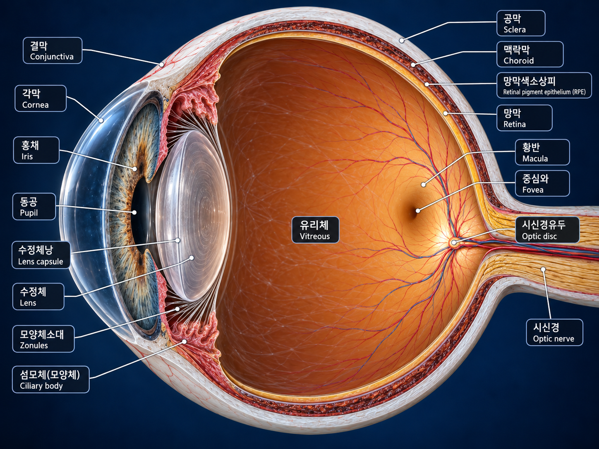

설명
💡 핵심 포인트
1
빛은 각막과 수정체를 지나 황반/중심와에 초점을 맞춥니다.
2
방수는 섬모돌기에서 생성되어 후방 → 동공 → 전방 → 섬유주 → 슐렘관으로 이동합니다.
3
망막은 망막색소상피(RPE) 안쪽에 위치하며 시각 신호를 시신경으로 전달합니다.
💧 방수의 흐름 경로
→
→
→
→
→
중앙 눈 구조 이미지는 최종 고정본을 그대로 사용하며, 인터랙션은 HTML 오버레이로만 동작합니다.

빛은 각막과 수정체를 지나 황반/중심와에 초점을 맞춥니다.
방수는 섬모돌기에서 생성되어 후방 → 동공 → 전방 → 섬유주 → 슐렘관으로 이동합니다.
망막은 망막색소상피(RPE) 안쪽에 위치하며 시각 신호를 시신경으로 전달합니다.